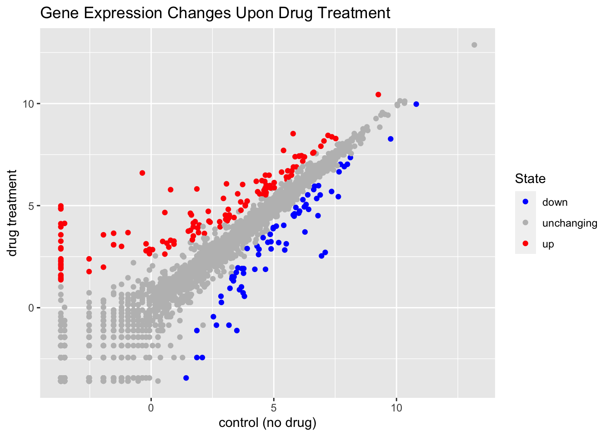
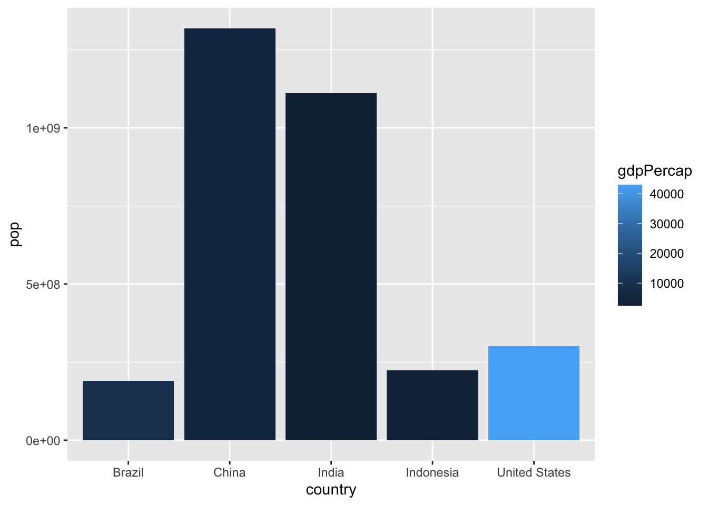
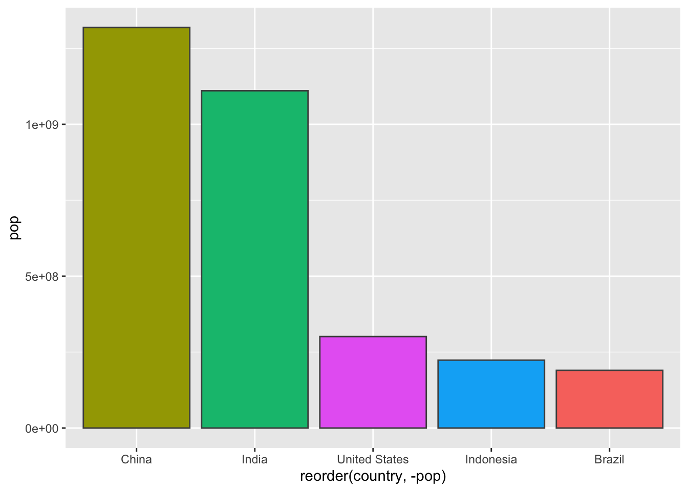
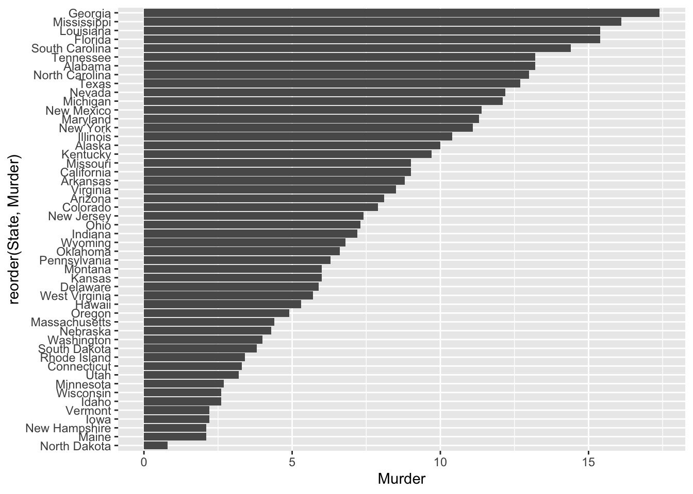

#installed ggplot2 package in terminal 'install.packages("ggplot2")'
library(ggplot2)class05: use visual markdown editor
Specifying dataset w/ ggplot()
#defining data set
ggplot(cars)
Specifying aesthetic mappings with aes()
ggplot(cars) + # + adds layers to plot
aes(x=speed, y=dist) #maps variables from dataset 
Specifying a geom layer w/ geom_point()
ggplot(cars) +
aes(x=speed, y=dist) +
geom_point() #actually plots points
To use ggplot I need to define the following: 1. Data 2. Aesthetics 3. geoms
ggplot(cars) +
aes(x=speed, y=dist) +
geom_point() + #actually plots points
geom_smooth() `geom_smooth()` using method = 'loess' and formula = 'y ~ x'
ggplot(cars) +
aes(x=speed, y=dist) +
geom_point() + #actually plots points
geom_smooth(method="lm", se=FALSE) #adds straight line w/out std. error`geom_smooth()` using formula = 'y ~ x'
ggplot(cars) +
aes(x=speed, y=dist) +
geom_point() + #actually plots points
geom_smooth(method="lm", se=FALSE) + #adds straight line w/out std. error
labs (title = "Speed and Stopping Distances of Cars",
x= "speed (mph)",
y= "stopping distance (ft)") +
theme_bw()`geom_smooth()` using formula = 'y ~ x'adding more plot aesthetics through aes()
url <- "https://bioboot.github.io/bimm143_S20/class-material/up_down_expression.txt"
genes <- read.delim(url)
head(genes) Gene Condition1 Condition2 State
1 A4GNT -3.6808610 -3.4401355 unchanging
2 AAAS 4.5479580 4.3864126 unchanging
3 AASDH 3.7190695 3.4787276 unchanging
4 AATF 5.0784720 5.0151916 unchanging
5 AATK 0.4711421 0.5598642 unchanging
6 AB015752.4 -3.6808610 -3.5921390 unchangingnrow(genes) #numb. of rows[1] 5196colnames(genes) # column names[1] "Gene" "Condition1" "Condition2" "State" ncol(genes) #numb. columns[1] 4#
table(genes$State)
down unchanging up
72 4997 127 round(table(genes$State)/nrow(genes)*100, 2)
down unchanging up
1.39 96.17 2.44 #graphing genes, condition1 v condition2
ggplot(genes)+
aes(x=Condition1, y= Condition2)+
geom_point()
p= ggplot(genes)+
aes(x=Condition1, y= Condition2, col= State)+
geom_point()
p
#changing colors of plot points
p + scale_colour_manual(values= c("blue", "gray", "red"))
#adding title & axis titles
p + scale_colour_manual(values= c("blue", "gray", "red")) +
labs(title= "Gene Expression Changes Upon Drug Treatment",
x= "control (no drug)",
y= "drug treatment")
Going Further
#installed gapminder package in terminal 'install.packages("gapminder")'
library(gapminder)#instalation of dplyr 'install.packages("dplyr")'
library(dplyr)
Attaching package: 'dplyr'The following objects are masked from 'package:stats':
filter, lagThe following objects are masked from 'package:base':
intersect, setdiff, setequal, union#filtering yr 2007
gapminder_2007 = gapminder %>% filter(year==2007)
#plotting gapminder_2007
ggplot(gapminder_2007)+
aes(x= gdpPercap, y= lifeExp)+
geom_point()
#changing plot point transparency
ggplot(gapminder_2007)+
aes(x= gdpPercap, y= lifeExp)+
geom_point(alpha=0.5)
adding more variables to aes()
#accounting for other variables: color based on continent, population by size of point
ggplot(gapminder_2007)+
aes(x= gdpPercap, y= lifeExp, color= continent, size=pop)+
geom_point(alpha=0.5)
#plot when we color the points by the numeric variable population, not accounting for location aka continent
ggplot(gapminder_2007) +
aes(x = gdpPercap, y = lifeExp, color = pop) +
geom_point(alpha=0.8)
adjusting point size
ggplot(gapminder_2007) +
aes(x = gdpPercap, y = lifeExp, size = pop) +
geom_point(alpha=0.5)#the point sizes are not proportional to population amount, not representative#scaling points to represent population
ggplot(gapminder_2007) +
aes(x = gdpPercap, y = lifeExp,
size = pop)+
geom_point(alpha=0.5) +
scale_size_area(max_size = 10)#making plot for year 1957
#filtering yr 2007
gapminder_1957 = gapminder %>% filter(year==1957)
ggplot(gapminder_1957) +
aes(x = gdpPercap, y = lifeExp,
size = pop, color= continent) +
geom_point(alpha=0.5) +
scale_size_area(max_size = 10)
ggplot(gapminder_1957) +
aes(x = gdpPercap, y = lifeExp,
size = pop, color= continent) +
geom_point(alpha=0.5) +
scale_size_area(max_size = 10)gapminder_19572007 <- gapminder %>% filter(year==1957 | year==2007)
ggplot(gapminder_19572007) +
aes(x = gdpPercap, y = lifeExp, color=continent,
size = pop) +
geom_point(alpha=0.7)+
scale_size_area(max_size = 10) +
facet_wrap(~year)Bar Charts
gapminder_top5 <- gapminder %>%
filter(year==2007) %>%
arrange(desc(pop)) %>%
top_n(5, pop)
gapminder_top5# A tibble: 5 × 6
country continent year lifeExp pop gdpPercap
<fct> <fct> <int> <dbl> <int> <dbl>
1 China Asia 2007 73.0 1318683096 4959.
2 India Asia 2007 64.7 1110396331 2452.
3 United States Americas 2007 78.2 301139947 42952.
4 Indonesia Asia 2007 70.6 223547000 3541.
5 Brazil Americas 2007 72.4 190010647 9066.ggplot(gapminder_top5) +
geom_col(aes(x = country, y = pop))
ggplot(gapminder_top5) +
geom_col(aes(x = country, y = pop, fill = continent))ggplot(gapminder_top5) +
geom_col(aes(x = country, y = pop, fill = lifeExp))
#plot pop size by country
ggplot(gapminder_top5) +
aes(x=country, y=pop, fill=gdpPercap) +
geom_col()
#change order of bars
ggplot(gapminder_top5) +
aes(x=reorder(country, -pop), y=pop, fill=gdpPercap) +
geom_col()
#fill by country
ggplot(gapminder_top5) +
aes(x=reorder(country, -pop), y=pop, fill=country) +
geom_col(col="gray30") +
guides(fill="none")
flipping bar charts
head(USArrests) Murder Assault UrbanPop Rape
Alabama 13.2 236 58 21.2
Alaska 10.0 263 48 44.5
Arizona 8.1 294 80 31.0
Arkansas 8.8 190 50 19.5
California 9.0 276 91 40.6
Colorado 7.9 204 78 38.7USArrests$State <- rownames(USArrests)
ggplot(USArrests) +
aes(x=reorder(State,Murder), y=Murder) +
geom_col() +
coord_flip()
#too crowded, fixing display aesthetics
ggplot(USArrests) +
aes(x=reorder(State,Murder), y=Murder) +
geom_point() +
geom_segment(aes(x=State,
xend=State,
y=0,
yend=Murder), color="blue") +
coord_flip()
Installed: install.packages(“gifski”) and install.packages(“gganimate”)
library(gapminder)
library(gganimate)#creating plot of gapminder data
ggplot(gapminder, aes(gdpPercap, lifeExp, size = pop, colour = country)) +
geom_point(alpha = 0.7, show.legend = FALSE) +
scale_colour_manual(values = country_colors) +
scale_size(range = c(2, 12)) +
scale_x_log10() +
# Facet by continent
facet_wrap(~continent) +
# gganimate part starts here
labs(title = 'Year: {frame_time}', x = 'GDP per capita', y = 'life expectancy') +
transition_time(year) +
shadow_wake(wake_length = 0.1, alpha = FALSE)combining plots
library(patchwork)#setting up sample plots
p1 <- ggplot(mtcars) + geom_point(aes(mpg, disp))
p2 <- ggplot(mtcars) + geom_boxplot(aes(gear, disp, group = gear))
p3 <- ggplot(mtcars) + geom_smooth(aes(disp, qsec))
p4 <- ggplot(mtcars) + geom_bar(aes(carb))#using patchwork to combine all plots
(p1 | p2 | p3) / p4`geom_smooth()` using method = 'loess' and formula = 'y ~ x'